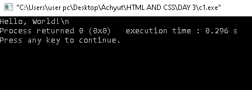
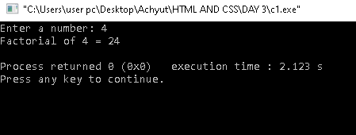

Simple C Code and Output
C Code: Hello World
#include
int main() {
printf("Hello, World!\\n");
return 0;
}
Output Image: Hello World

C Code: Sign Check
#include
int main()
{
int i ,a ;
printf("Enter a Integer: ");
scanf("%d",&a);
if( a>0 )
printf("Positive");
if( a<0 )
printf("Negative");
if( a==0 )
printf("Zero");
return 0;
}
Output Image: Even or Odd

C Code: Factorial Calculation
#include
int main() {
int num, i;
long long fact = 1;
printf("Enter a number: ");
scanf("%d", &num);
for(i = 1; i <= num; i++) {
fact *= i;
}
printf("Factorial of %d = %lld\\n", num, fact);
return 0;
}
Output Image: Factorial Calculation
